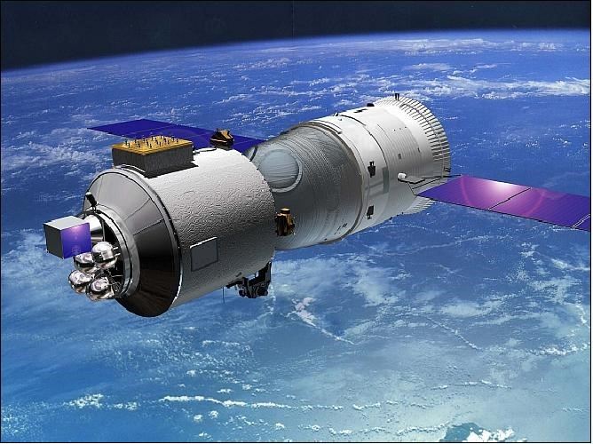
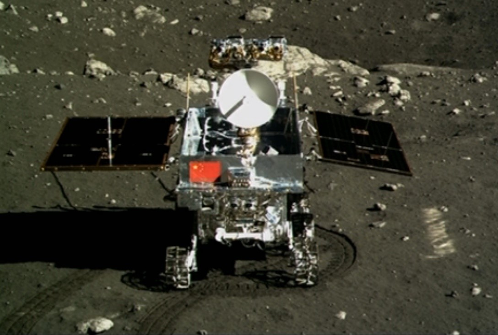

Highlights
China
-

Banxing or BX-1, is a small Chinese technology development satellite which was deployed from the Shenzhou 7 spacecraft at 11:27 GMT on 27 September 2008. Prior to deployment, the satellite was mounted on top of the Shenzhou 7 orbital module. Read more... -

Tianlian I, also known as Tian Lian 1, TL-1, and CTDRS-1 is a Chinese data tracking and relay communications satellite series. Based on the DFH-3 satellite bus, it will provide communication coverage for manned Shenzhou missions, from Shenzhou 7 onwards. Read more... -

Yinghuo-1 was a Chinese Mars-exploration space probe, intended to be the first Chinese spacecraft to explore Mars. It was launched from Baikonur Cosmodrome, Kazakhstan, on 8 November 2011, along with the Russian Fobos-Grunt sample returnspacecraft, which was intended to visit Mars' moon Phobos. Read more... -

Yinghuo-1 was a Chinese Mars-exploration space probe, intended to be the first Chinese spacecraft to explore Mars. It was launched from Baikonur Cosmodrome, Kazakhstan, on 8 November 2011, along with the Russian Fobos-Grunt sample returnspacecraft, which was intended to visit Mars' moon Phobos. Read more... -
The Dark Matter Particle Explorer, or DAMPE, is a Chinese Academy of Sciences (CAS) satellite which was launched on 17 December 2015 at 00:12 UTC. The satellite was launched on a Long March 2D rocket from Launch Pad 603 at the LC-43 complex, also known as the South Launch Site, at the Jiuquan Satellite Launch Center. It is China's first ever space observatory Read more... -
Tiangong-1 (is China's first prototype space station,serving as both a manned laboratory and an experimental testbed to demonstrate orbital rendezvous and docking capabilities.Launched unmanned aboard a Long March 2F/G rocket on 29 September 2011, it is the first operational component of the Tiangong program, which aims to place a larger, modular station into orbit by 2023. Read more... -
Tiangong-1 (is China's first prototype space station,serving as both a manned laboratory and an experimental testbed to demonstrate orbital rendezvous and docking capabilities.Launched unmanned aboard a Long March 2F/G rocket on 29 September 2011, it is the first operational component of the Tiangong program, which aims to place a larger, modular station into orbit by 2023. Read more... -
Hard X-ray Modulation Telescope (HXMT) also known as Insight is a Chinese X-ray space observatory, launched on June 15, 2017 to observe black holes, neutron stars, active galactic nuclei and other phenomena based on their X-ray and gamma-ray emissions. Read more...